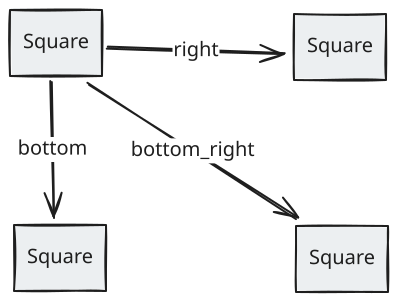
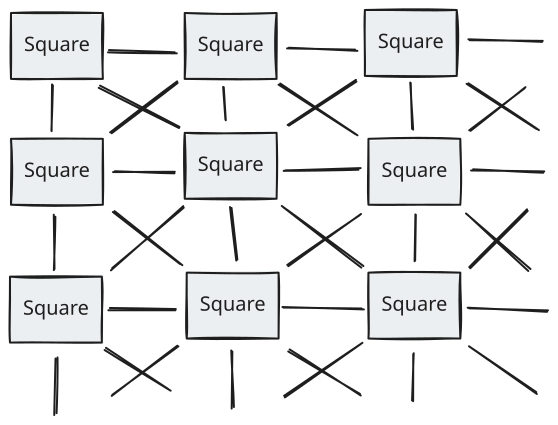
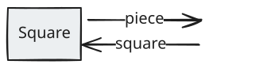
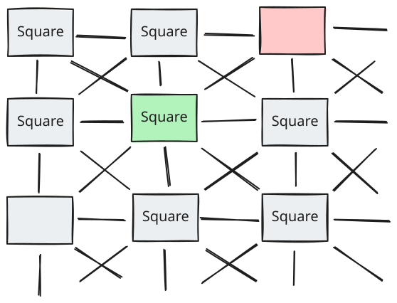
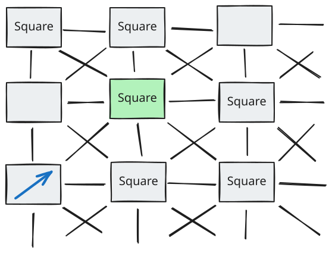
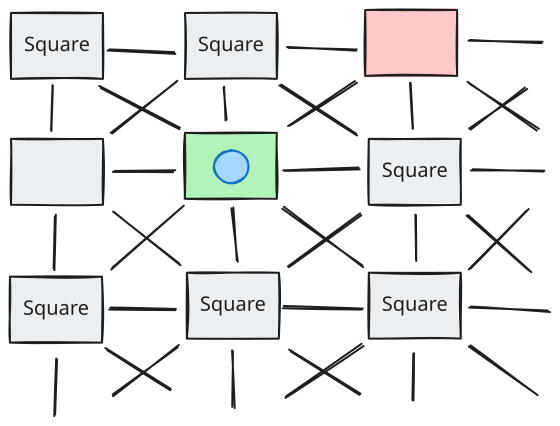
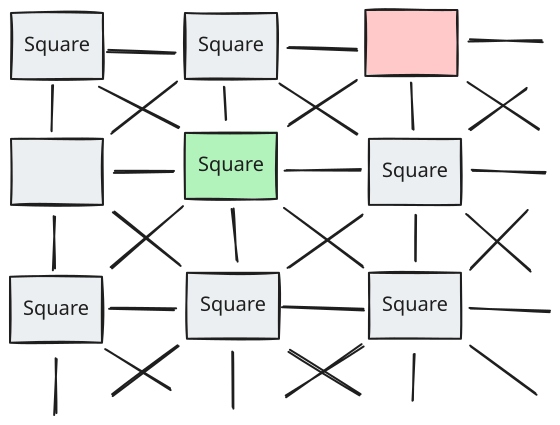

x to be an Actor.
The objective is to implement a chess game, just enough to test Actor Model ideas. Besides showing proper chess board, we are interested in implementing two cases:
- Detecting that a piece is
pinned
. - Preventing the king from moving to a threatened square.
- A click on
INITthenATTACKED SQUAREshows that the white king cannot move up because the target square is threatened by the queen. - A click on
INITthenPINNEDshows that the white king cannot move up because the target square is threatened by the queen. - The code is available here.
So far, we have an abstract definition of an
Actor. In Javascript, we propose an implementation structured as shown below. In addition, we define what is
a Message and what it means to send a message
in the javascript context. Details are given in the
following sections.
An actor is built using const actor = new Actor(/* init state */), which introduces the actor actor initialized using values in /* init state */. An Actor may have a private state, so the Actor class starts with:
An Actor is constructed by allocating memory, computation, and communication resources, including an address. This process is modeled by the class constructor.
Using actor means sending messages to actor. Sending a message hello to actor is modelled by a method call:
hello may be implemented using synchronous or asynchronous code. A synchronous implementation may be:
In the asynchronous case, hello should send a message to
actor, let the runtime execute whatever needs to be and wait
for an answer whenever it is available. Once received, the computation
should continue. In this case, we need to define:
- A
Message. - A
send(message)procedures that delivers the message to its destination. - The actor
behaviourhow the actor will react to the message.
A Message has an address and a content:
Then, the send operation is modelled using:
which leds us to give an Actor a behaviour:
The asynchronous version of hello may be implemented using:
When waiting for a reply, the calling code may always use const world = await actor.hello() which works for the asynchronous and synchronous implementation of hello().
When the browser accesses this page at:
It sends a message using the HTTP protocol requesting this Web page. The Web page contains this code:
which may be interpreted as sending a message to the Web server requesting for the file data/chess.js and then sending a message to itself requesting to evaluate the associated JavaScript code.
Evaluating the code means executing window.chess = build(); which may be interpreted by the browser as: I should handle the message
. Re-interpreting the code in terms of actors and message passing does not require much effort.build and store the result in window.chess
The board is an Actor. Thinking above the code, its implementation is:
A square is an Actor. Thinking above the code, its implementation is:
Each square has neighbors. For a given direction dir — e.g. top — the
neighbor of a square s is given by s.get_neighbor(dir) ≡ s'. Given that
s has for neighbor s', we have: s' has for neighbor
s. So, from s at the top left corner of the board, a network of neighboring
squares can be built:

If given two neighbors s and s', we represent their relations by one
edge. Doing so step by step gives rise to the network of squares that represent the chess board:

A square may be occupied by at most one piece. A piece may occupy at most one square. So, we may add the pieces to the network of squares.

We just superpose the piece and the square to represent this relation.
Assume that we have the board configuration below. From the point of view of the black king, the white bishop is a threat.

How to detect the threat of the black king? By sending probes.
A probe is an Actor. Its above the code
description is:
To detect if a square is threatened by a bishop, it is enough to know that a bishop of the adversary team has a direct view of the given square. Before moving, the king builds four probes like so (in pseudo-code):
Each probe is started at about the same time and travels — eventually in parallel — along the given direction searching for a bishop of the opposite team. When one is found, it raises an exception signaling that a threat has been detected. Using pictures, it looks like this:



- Chess games